Références
Cette page rassemble mes œuvres préférées, servant de références dans mon travail.
Cette page évolue constamment.
Dernière mise à jour : 13 février 2024
Musique
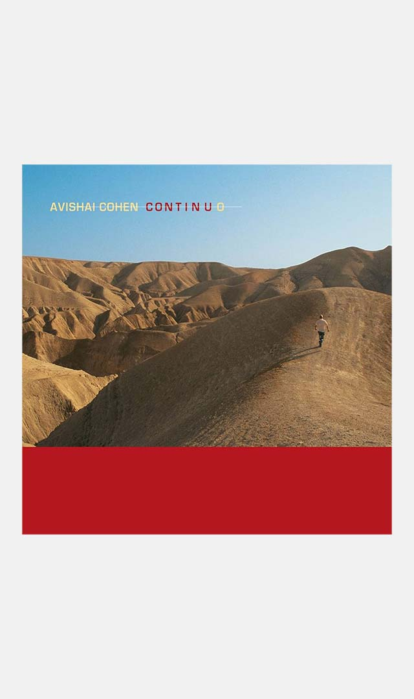
Continuo
Avishai Cohen, 2006.
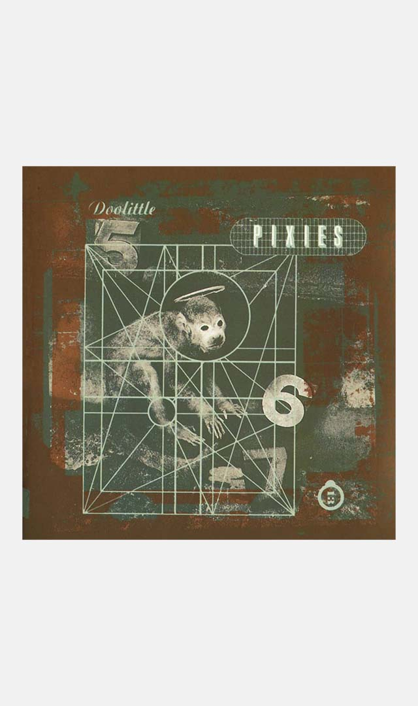
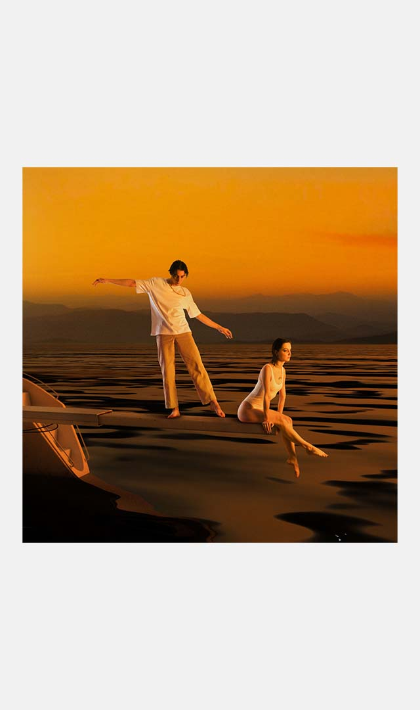
Équilibre
The Pirouettes, 2021.
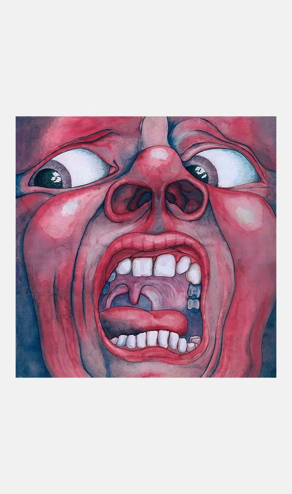
In the court of the Crimson King
King Crimson, 1969.
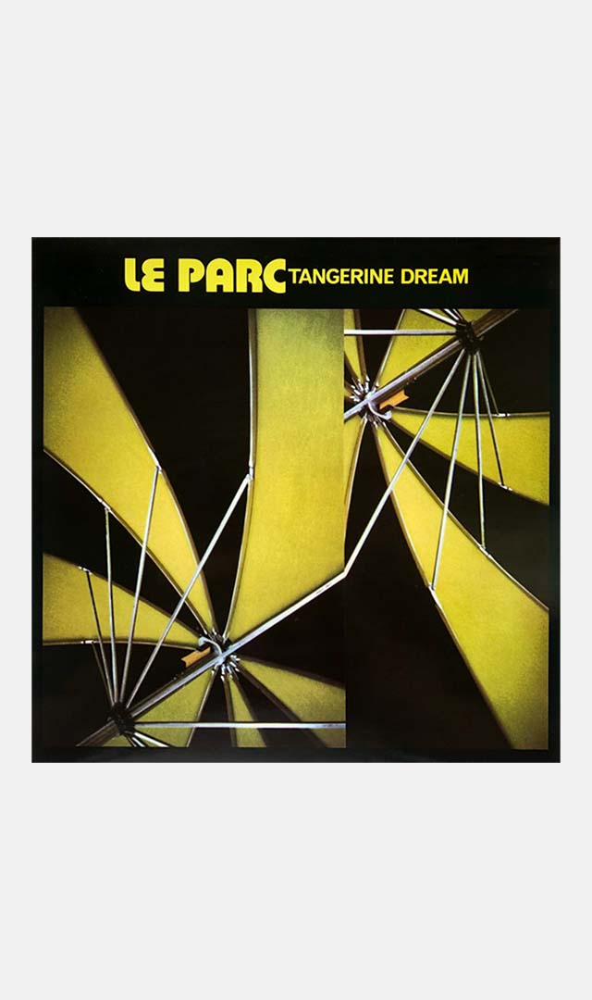
Le Parc
Tangerine Dream, 1985.
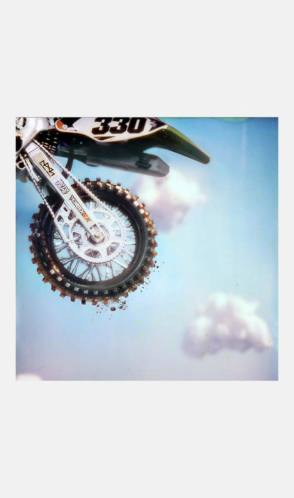
Mid Air
Paris Texas, 2023.
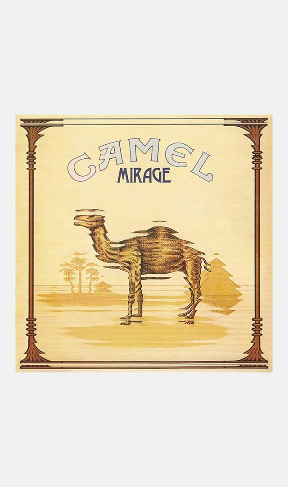
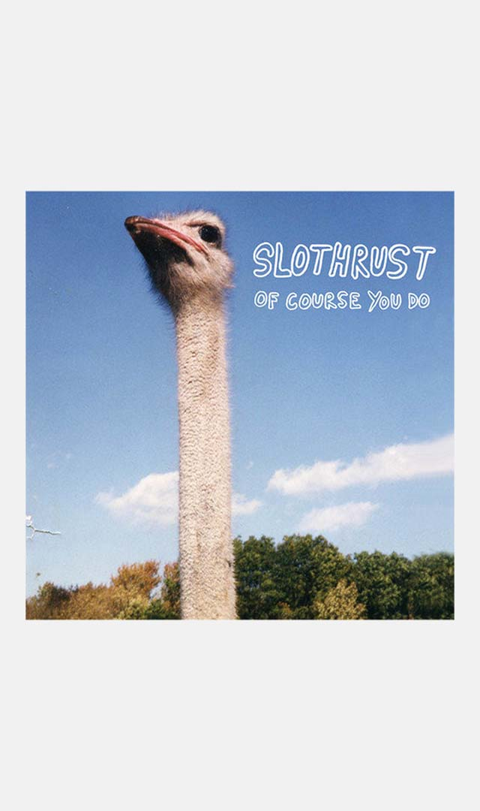
Of course you do
Slothrust, 2014.
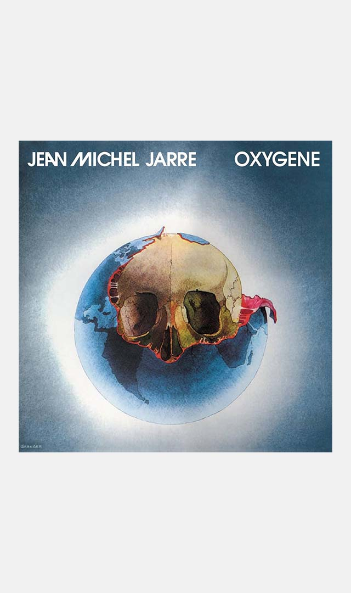
Oxygène
Jean-Michel Jarre, 1976.
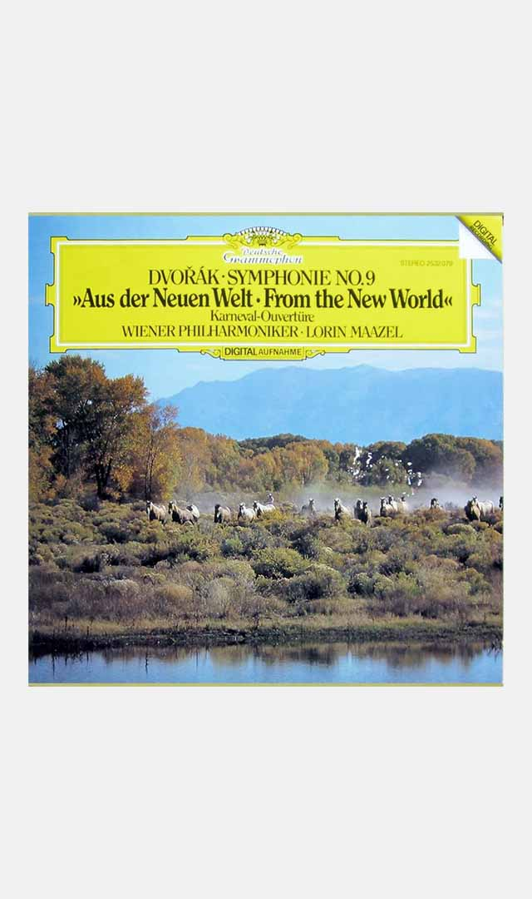
Symphonie n°9 "Du nouveau monde"
Antonín Dvořák, 1893.
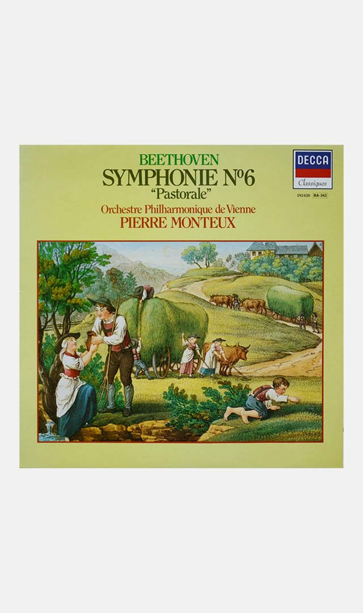
Symphonie n°6 "Pastorale"
Ludwig van Beethoven, 1808.
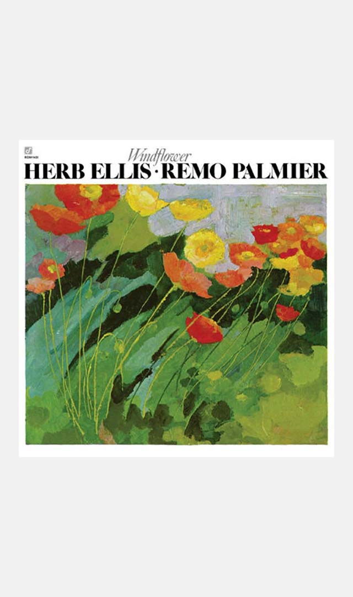
Windflower
Herb Ellis & Remo Palmier, 1977.
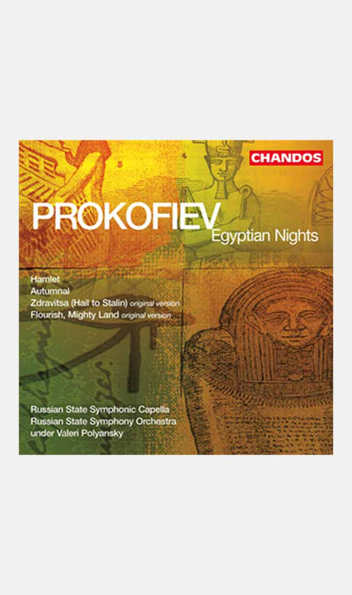
Zdravitsa
Sergueï Prokofiev, 1939.
à propos


Site conçu par Amaury Hardré, 2024
références
cinéma
livre
peinture
jeu